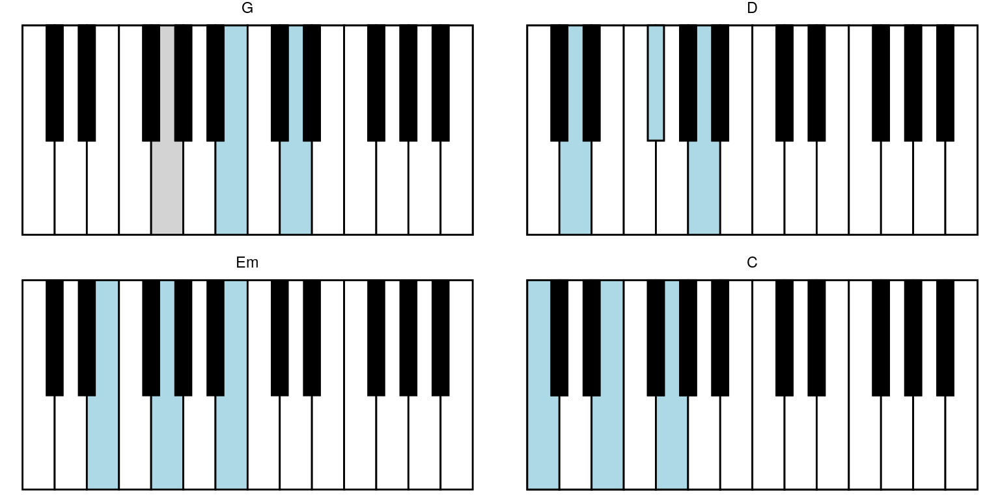
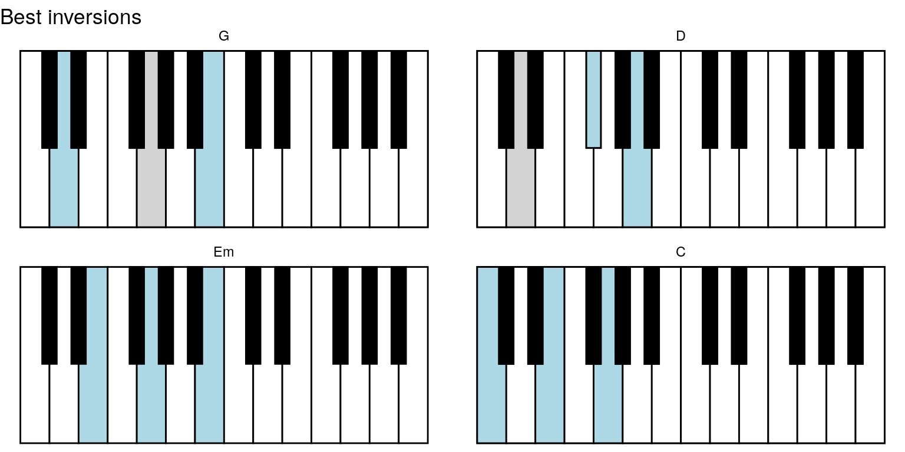
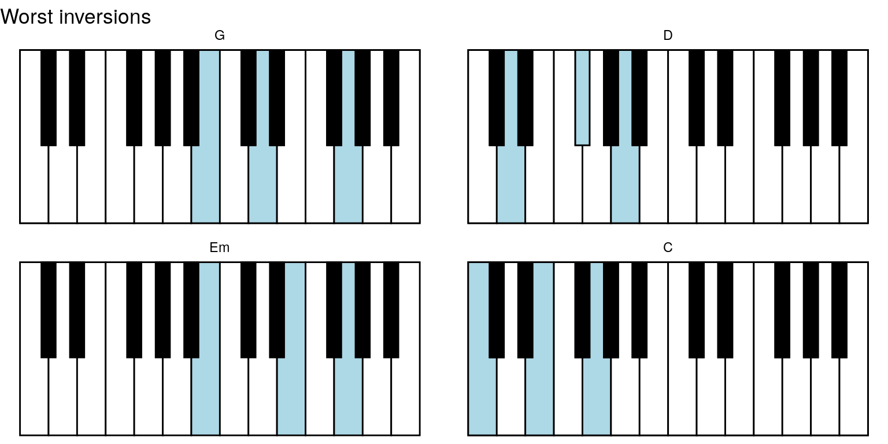
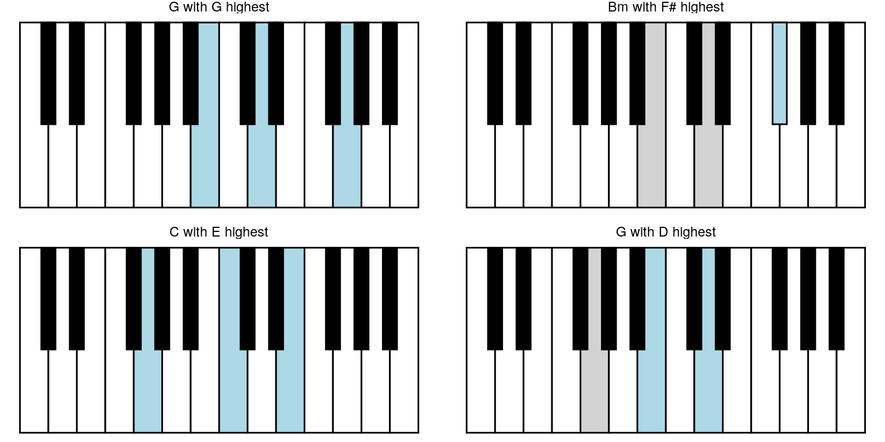

Chord sequence
Mikkel Meyer Andersen
2019-07-28
chord-sequence.RmdSlightly larger example
A version of “Let it be” by Beatles initially has chords G, D, Em, C, G, D, C.
chords <- list(construct_chord_major("G"),
construct_chord_major("D"),
construct_chord_minor("E"), # Em
construct_chord_major("C"),
construct_chord_major("G"),
construct_chord_major("D"),
construct_chord_major("C"))
chords
#> [[1]]
#> G chord (major) with tones G, B, D
#>
#> [[2]]
#> D chord (major) with tones D, F#/Gb, A
#>
#> [[3]]
#> Em chord (minor) with tones E, G, B
#>
#> [[4]]
#> C chord (major) with tones C, E, G
#>
#> [[5]]
#> G chord (major) with tones G, B, D
#>
#> [[6]]
#> D chord (major) with tones D, F#/Gb, A
#>
#> [[7]]
#> C chord (major) with tones C, E, G
chord_names <- sapply(chords, as.character, brief = TRUE)keys_chords %>%
highlight_key_sequence(key_sequence = key_seq) %>%
ggpiano() +
facet_wrap(~ seq_name)
#> NULL
And get more helpful facet panel title by providing sequence_names argument to highlight_key_sequence:
keys_chords %>%
highlight_key_sequence(key_sequence = key_seq,
sequence_names = chord_names) %>%
ggpiano() +
facet_wrap(~ seq_name)
#> NULL
And for exmple include seq_no in a new column seq_lbl (that are then converted to a factor with the right ordering):
keys_chords %>%
highlight_key_sequence(key_sequence = key_seq,
sequence_names = chord_names) %>%
mutate(seq_lbl = paste0(seq_name, " (#", seq_no, ")")) %>%
mutate(seq_lbl = forcats::fct_inorder(seq_lbl)) %>%
ggpiano() +
facet_wrap(~ seq_lbl)
#> NULL
Finding better inversions
Currently only one method is available for finding better inversions. It is minimising the distances between keys in consecutive chords, where distance is the number of keys not used anymore plus new keys.
And with an exhaustive approach that is only feasible for shorter sequences.
keys_chords %>%
highlight_key_sequence(key_sequence = opt_res$best,
sequence_names = chord_names) %>%
ggpiano() +
facet_wrap(~ seq_name) +
labs(title = "Best inversions")
#> NULL
keys_chords %>%
highlight_key_sequence(key_sequence = opt_res$worst,
sequence_names = chord_names) %>%
ggpiano() +
facet_wrap(~ seq_name) +
labs(title = "Worst inversions")
#> NULL
Bigger example
chords <- list(
list(chord = construct_chord_major("G"),
highest_tone = "G"),
list(chord = construct_chord_minor("B"),
highest_tone = "F#"),
list(chord = construct_chord_major("C"),
highest_tone = "E"),
list(chord = construct_chord_major("G"),
highest_tone = "D")
)chord_keys <- lapply(chords, function(x) get_keys_highest_tone(x$chord, x$highest_tone))
chord_names <- lapply(chords, function(x) paste0(
as.character(x$chord, brief = TRUE),
" with ", x$highest_tone, " highest"))
keys_chords %>%
highlight_key_sequence(key_sequence = chord_keys,
sequence_names = chord_names) %>%
ggpiano() +
facet_wrap(~ seq_name)
#> NULL